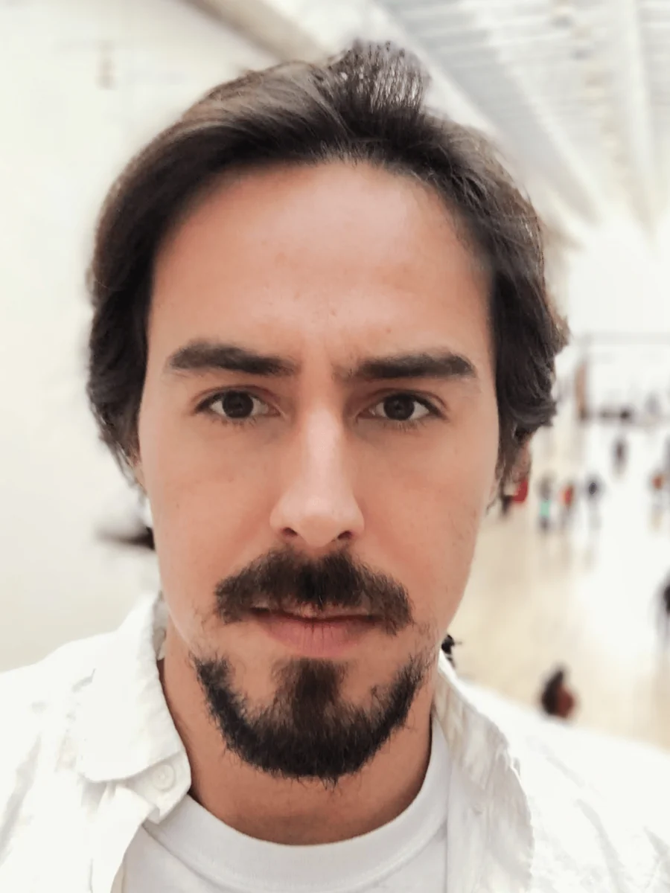
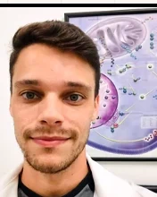
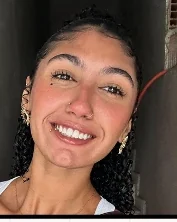
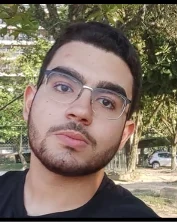
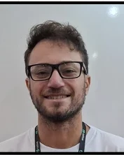
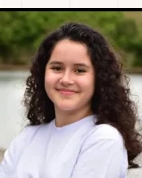
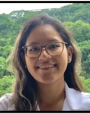
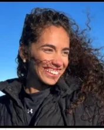

Team & collaborators
A multidisciplinary research group of biologists, biochemists and biomedical scientists investigating vector-pathogen-host interactions at IBCCF/UFRJ.

Dr. Fabio M. Gomes
UG in Biology (2006), MSc (2008) and Ph.D. in Biophysics (2012) at UFRJ, under Ednildo de Alcantara Machado and Kildare Rocha de Miranda. Foundational work on polyphosphate biology in insects, including the widely-adopted DAPI-based polyP visualization technique.
Intramural Fellow at NIH/NIAID (2014–2019), Postdoctoral Researcher at Johns Hopkins (2019), and Marie Skłodowska-Curie Fellow at CNRS, Paris (2019). Associate Professor at UFRJ since 2019. Coordinates the Vector Insects Platform, the Graduate Programme in Parasitology and Cell Biology, and the PPGP-TBB; Vice-Director of the Advanced Microscopy Unit (UMA) at CENABIO.
The research team.
Postdocs, PhD students, MSc candidates and undergraduates working across our five research lines.




Where our alumni are now.
Members who trained with us and continued their careers in research, industry, and teaching across Brazil and abroad.


